처음 쓰는 분을 위한 설명서
실제 화면을 보고
하나씩 눌러 보세요.
Android 휴대전화에서 앱을 받고 첫 사진을 분류할 때까지 차례대로 안내합니다. 한 단계가 끝나면 아래로 내려가 다음 번호를 보세요.
첫 번째 · 앱 설치
휴대전화에 앱 넣기
Android 8.0 이상 휴대전화에서 진행하세요. iPhone에는 이 APK를 설치할 수 없습니다. 일반적인 설치에는 개발자 모드를 미리 켤 필요가 없습니다.
-
1
휴대전화에서 설치 버튼 누르기
휴대전화에서 이 사이트를 열고 연두색 Android 앱 설치 파일 받기 버튼을 한 번 누르세요.
아직 이 페이지를 PC에서 보고 있다면, 휴대전화 인터넷 주소창에 habang222.pro를 입력하세요.
파일 이름은 PhotoSorter.apk입니다. 다른 앱 이름이 표시되면 설치하지 마세요.
Android 앱 설치 파일 받기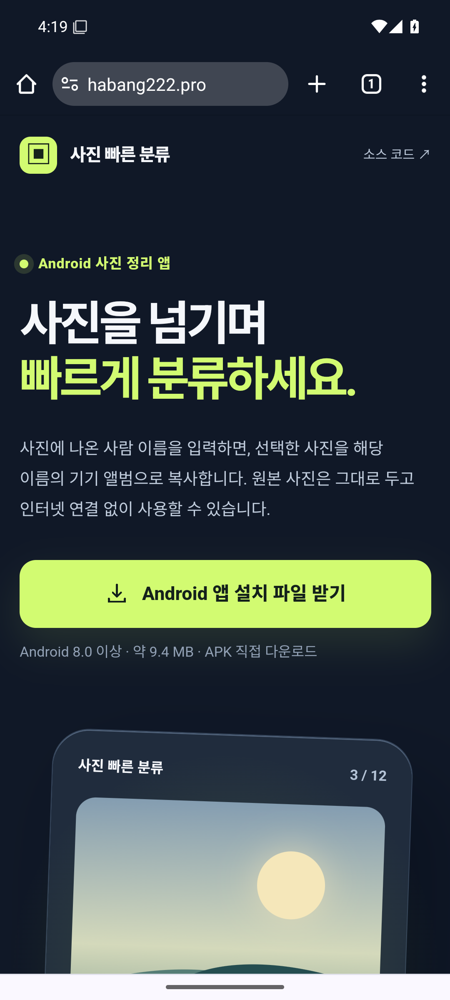
Chrome에서 연두색 설치 파일 버튼을 누릅니다. 화면 크게 보기 ↗ -
2
받은 파일 열기
Chrome이 ‘유해한 파일일 수도 있음’을 물으면, 바로 위 설치 버튼을 눌렀고 파일 이름이 PhotoSorter.apk인지 확인하세요. 맞다면 무시하고 다운로드를 누릅니다.
다운로드가 끝나면 다운로드 1개 완료 → 열기를 누르세요. APK는 Android 앱 설치 파일이라는 뜻입니다.
파일이 안 보이면 Chrome 오른쪽 위 ⋮ → 다운로드로 가거나, 삼성 갤럭시의 내 파일 → 다운로드 폴더를 여세요.
Chrome의 APK 다운로드 경고와 Android의 Play Protect 유해 앱 차단은 다른 화면입니다. Play Protect가 차단하면 아래 문제 해결 안내에 따라 설치를 멈추세요.
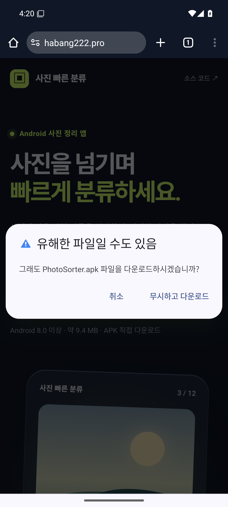
① 파일 이름을 확인한 뒤 무시하고 다운로드를 누릅니다. 화면 크게 보기 ↗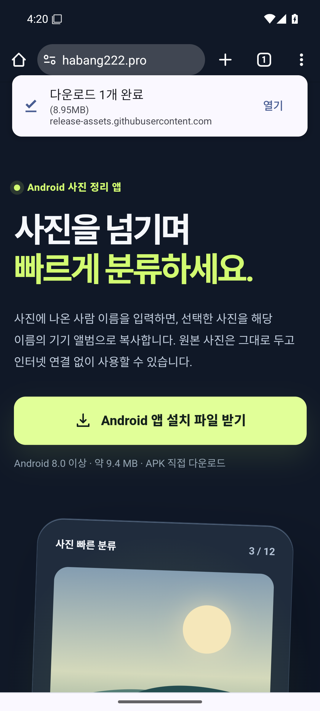
② 다운로드가 완료되면 열기를 누릅니다. 화면 크게 보기 ↗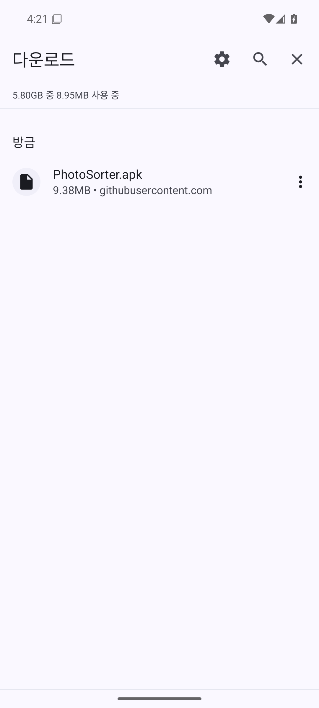
완료 알림이 사라졌다면 다운로드 목록에서 PhotoSorter.apk를 누릅니다. 화면 크게 보기 ↗ -
3
‘이 출처 허용’이 나오면 켜기
‘출처를 알 수 없는 앱 설치’ 또는 ‘이 출처의 앱 허용’ 화면이 나오면 설정을 누르세요. 화면에 표시된 Chrome 또는 내 파일 앱의 설치 허용 스위치를 켭니다. 설치 확인 창이 바로 뜨면 4번으로 넘어가세요. 안 뜨면 뒤로 가서 PhotoSorter.apk를 다시 여세요.
갤럭시에서 허용 화면을 직접 찾아야 한다면 설정 → 보안 및 개인정보 보호 → 기타 보안 설정 → 출처를 알 수 없는 앱 설치로 가서 APK를 연 앱을 선택하세요. 메뉴가 다르면 설정 검색창에 출처를 알 수 없는 앱 설치를 입력하세요. 삼성 갤럭시의 실제 설정 사진 보기(영어)
이 화면이 나오지 않으면 아무것도 바꾸지 말고 4번으로 넘어가세요. 이 설정은 개발자 모드와 다릅니다. 갤럭시에 보안 위험 자동 차단이 표시되면 아래 같은 문구의 문제 해결 항목을 보세요.
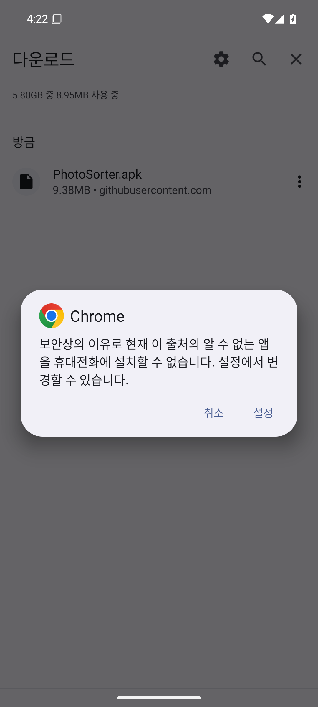
① Chrome 설치 차단 창이 나오면 설정을 누릅니다. 화면 크게 보기 ↗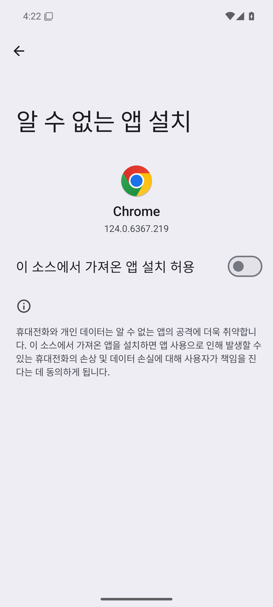
② Chrome 화면 오른쪽의 회색 설치 허용 스위치를 누릅니다. 화면 크게 보기 ↗ -
4
설치하고 열기
Android 설치 확인 창에서 앱 이름 사진 이름별 분류를 확인하고 설치를 누르세요. 설치가 끝나면 열기를 누릅니다.
웹사이트 이름은 ‘사진 빠른 분류’이고 휴대전화에 표시되는 앱 이름은 ‘사진 이름별 분류’입니다.
3번에서 Chrome이나 내 파일의 설치 허용 스위치를 켰다면, 설치를 마친 뒤 같은 설정 화면으로 돌아가 스위치를 다시 끄세요.
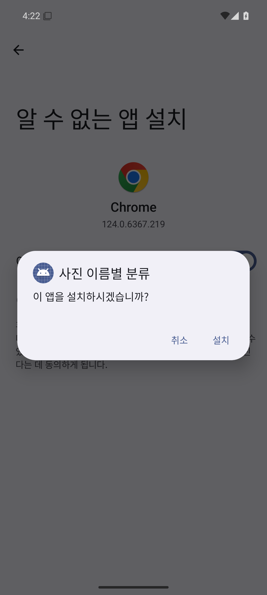
① 앱 이름을 확인한 뒤 설치를 누릅니다. 화면 크게 보기 ↗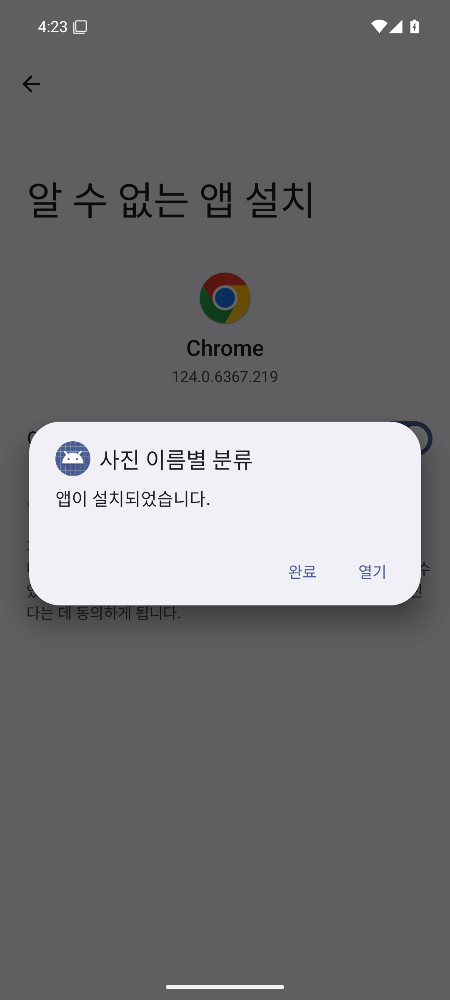
② ‘앱이 설치되었습니다’가 나오면 열기를 누릅니다. 화면 크게 보기 ↗


두 번째 · 첫 사진 분류
앱에서 사진 정리하기
원본 사진은 그대로 두고, 고른 앨범에 사본을 만듭니다. 먼저 사진을 넣을 앨범을 등록하세요.
-
5
사진 접근 권한 선택하기
앱의 사진 접근 권한 설명을 읽고 확인하고 권한 요청을 누르세요. 이어서 Android가 띄우는 사진 권한 창에서 원하는 접근 범위를 선택합니다.
기기에 저장된 앨범을 모두 찾으려면 모두 허용을 선택하세요. 갤럭시에서는 모든 사진 및 동영상 허용 등으로 표시될 수 있습니다. 일부 사진만 허용하면 앱에 보이는 앨범과 사진이 제한될 수 있습니다.
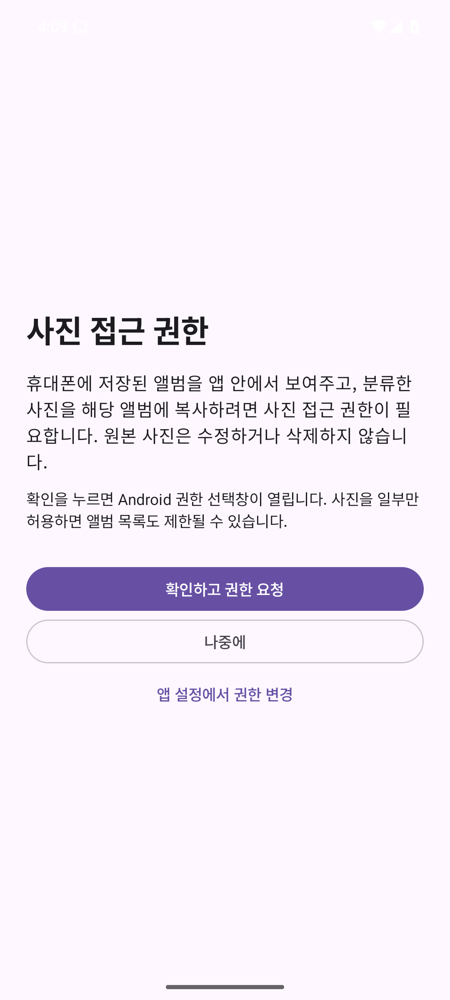
① 앱에서 권한 설명을 읽고 확인하고 권한 요청을 누릅니다. 화면 크게 보기 ↗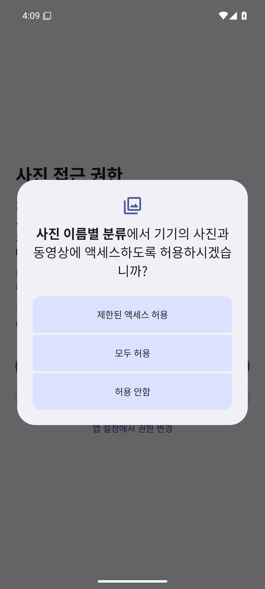
② Android 권한 창에서 원하는 범위를 선택합니다. 화면 크게 보기 ↗ -
6
사진을 넣을 앨범 등록하기
+ 앨범 추가를 누르고, 목록에서 원하는 앨범 카드를 누르세요. 새로 만들려면 + 새 앨범을 누르고 앨범 이름 → 등록 순서로 진행합니다.
홈의 입력 이름이 나중에 사진에 적을 사람 이름과 같아야 합니다. 예를 들어 가족 앨범에 김유찬 사진을 넣으려면 입력 이름 수정 → 김유찬 입력 → 저장을 누르고 김유찬 → 가족으로 표시되는지 확인하세요. 아래 시험 화면에서는 가족 대신 GuideSamples 앨범을 사용했습니다.
새 앨범은 첫 사진이 복사되면 갤러리에 나타납니다.
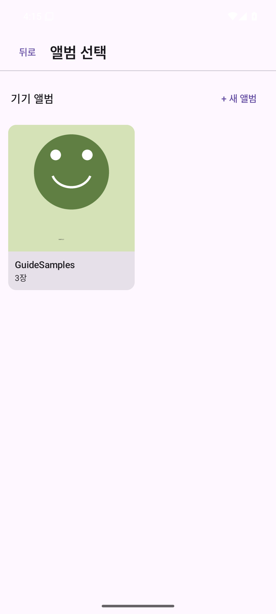
① 앨범 목록에서 원하는 앨범을 고르거나 + 새 앨범을 누릅니다. 화면 크게 보기 ↗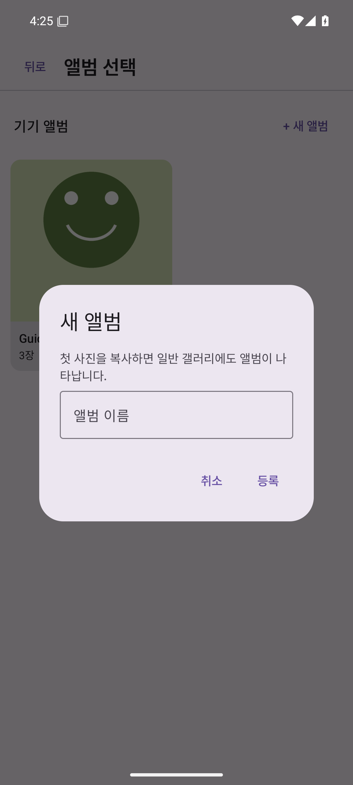
② 새 앨범을 만드는 경우 이름을 적고 등록을 누릅니다. 화면 크게 보기 ↗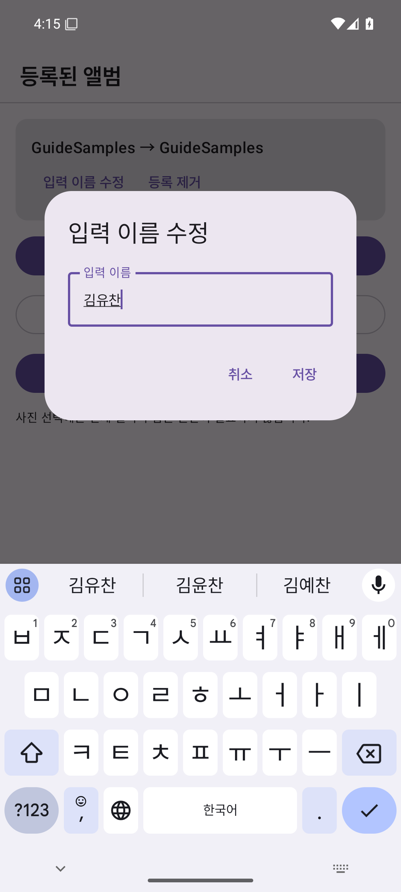
③ 입력 이름 수정에서 사진에 쓸 이름을 저장합니다. 화면 크게 보기 ↗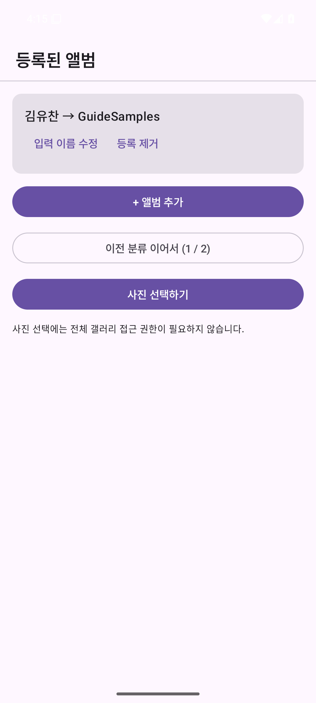
④ 입력 이름 → 앨범 연결이 맞는지 확인합니다. 화면 크게 보기 ↗ -
7
분류할 사진 고르기
앱에서 사진 선택하기를 누르세요. 휴대전화 사진 선택 화면이 열리면 분류할 사진을 하나 또는 여러 장 누르고, 화면의 추가 또는 선택 버튼을 누릅니다.
여기서 선택한 사진만 이번 분류 작업에 들어갑니다.
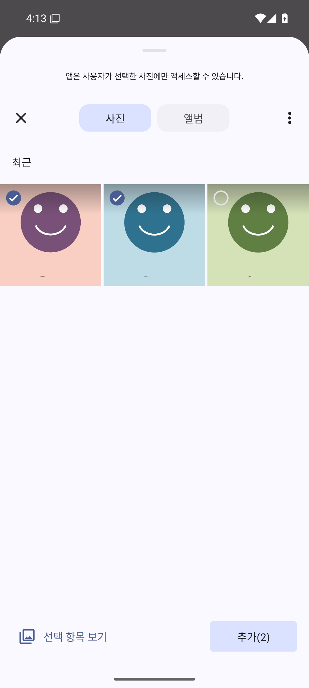
시험 사진 두 장이 선택된 실제 화면입니다. 아래의 추가(2)를 누릅니다. 화면 크게 보기 ↗ -
8
이름을 쓰고 ‘완료’ 누르기
사진에 나온 사람의 이름을 사람 이름 칸에 쓰고 키보드의 완료 또는 엔터를 누르세요. 6번에서 등록한 입력 이름과 같아야 합니다.
두 사람이 함께 있으면 김유찬, 이은채처럼 쉼표나 띄어쓰기로 구분하세요. 복사가 끝나면 다음 사진으로 넘어갑니다. 이름을 비우고 완료를 누르면 그 사진은 건너뜁니다.
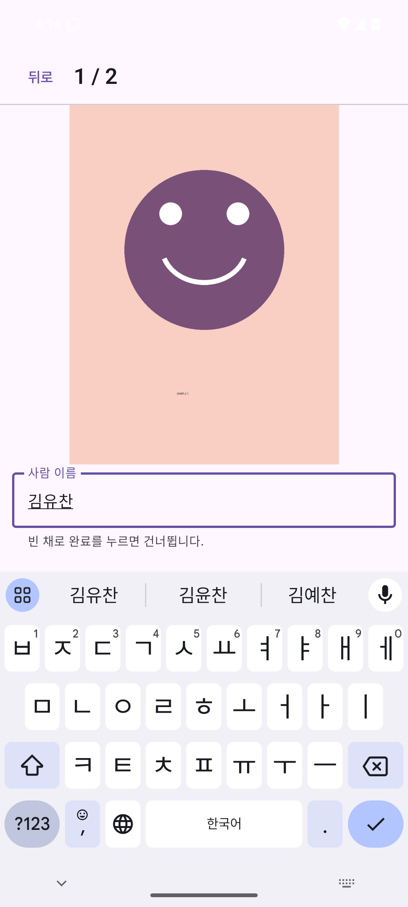
김유찬을 입력한 실제 앱 화면입니다. 키보드 오른쪽 아래의 확인 표시를 누릅니다. 화면 크게 보기 ↗


세 번째 · 막힐 때
화면에 나온 문구부터 확인하세요
설치가 멈췄다고 무조건 개발자 모드를 켜지 마세요. 아래에서 실제로 보이는 문구와 같은 항목을 여세요.
“이 출처의 앱 설치를 허용”이 보여요
위 3번 안내처럼, APK를 연 앱(Chrome 또는 내 파일)의 허용 스위치를 켜고 뒤로 가세요. 다시 PhotoSorter.apk를 열면 됩니다. 개발자 옵션을 켜는 단계가 아닙니다.
삼성 갤럭시에서 “보안 위험 자동 차단”이 나와요
이 문구가 실제로 보이는 삼성 갤럭시에서만 확인하세요. 이 기능이 켜져 있으면 웹에서 받은 APK의 설치가 막힐 수 있습니다. 먼저 파일 이름이 PhotoSorter.apk이고 이 사이트의 버튼을 통해 GitHub에서 받은 파일인지 확인하세요.
확인했다면 휴대전화 설정 → 보안 및 개인정보 보호 → 보안 위험 자동 차단에서 기능을 잠시 끄고, PhotoSorter.apk를 다시 여세요. 필요하면 위 3번의 이 출처의 앱 허용도 진행하세요. 설치가 끝나면 같은 경로로 돌아와 보안 위험 자동 차단을 다시 켜세요. 기종과 One UI 버전에 따라 화면은 다를 수 있습니다. 삼성 공식 안내와 실제 화면 보기
“인증되지 않은 개발자”라며 설치가 막혀요
이것은 ‘이 출처 허용’과 다른 개발자 신원 확인 화면입니다. 2026년 10월 현재 Android 공식 안내에 따르면 웹에서 직접 받은 APK는 새 인증 제도의 초기 적용 대상이 아니므로 보통 이 화면이 나오지 않습니다. 실제로 이 문구가 보일 때만 아래 고급 절차를 확인하세요.
- 무슨 파일인지 먼저 확인: 설치하려는 앱 이름은 사진 이름별 분류, 파일 이름은 PhotoSorter.apk입니다. 이 사이트의 버튼을 눌러 GitHub 릴리스에서 받은 파일인지 확인하세요.
- 개발자 옵션 켜기: 휴대전화 설정 앱에서 아래 기종별 길을 따라 빌드 번호를 연속 7번 누르세요. 잠금 PIN·패턴·비밀번호를 물으면 본인 휴대전화의 것을 직접 입력합니다.
- 삼성 Galaxy: 설정 → 휴대전화 정보 → 소프트웨어 정보 → 빌드번호
- Google Pixel: 설정 → 휴대전화 정보 → 빌드 번호
- 인증되지 않은 앱 허용: 설정으로 돌아가 개발자 옵션을 엽니다. Pixel은 보통 설정 → 시스템 → 개발자 옵션, 삼성은 설정 화면에서 개발자 옵션을 찾습니다. 인증되지 않은 개발자의 앱 허용을 누르고 휴대전화에 나오는 보안 안내를 읽으세요.
- 기다렸다가 본인 확인: 화면이 요구하면 타인의 지시로 진행 중이 아님을 확인하고 휴대전화를 재시작해 잠금을 풉니다. 24시간 보안 대기가 끝난 뒤 같은 설정으로 다시 가서 지문·얼굴 또는 PIN으로 본인 확인을 마치세요.
- 설치 마무리: 화면에서 7일 또는 무기한 허용을 선택한 다음 PhotoSorter.apk를 다시 엽니다. 실제로 이 개발자 신원 경고가 다시 나오면 어쨌든 설치를 누르세요. ‘이 출처 허용’도 별도로 요구될 수 있습니다.
기종에 따라 메뉴 이름이 다릅니다. Google의 공식 고급 설치 안내, 삼성 개발자 옵션 안내, Android 개발자 옵션 안내를 함께 보세요. Play Protect가 유해 앱이라고 차단한 경우에는 이 절차를 적용하지 마세요.
Play Protect가 유해한 앱이라며 차단해요
이 경우는 개발자 신원 미확인과 다릅니다. 설치를 멈추고 경고 문구와 내려받은 주소를 확인한 뒤 앱을 전달한 사람에게 보여 주세요. Play Protect를 끄거나 경고를 무조건 지나가도록 안내하지 않습니다. Google Play Protect 안내
“앱이 설치되지 않았습니다”라고 나와요
이전에 받은 테스트용 APK가 설치되어 있다면 서명이 달라 업데이트할 수 없습니다. 기존 사진 이름별 분류 앱을 제거한 뒤 다시 설치하세요. 제거하면 앱의 설정과 진행 기록은 지워지지만 원본 사진과 갤러리에 복사된 사진은 남습니다.
다운로드 파일이나 앨범을 못 찾겠어요
파일: Chrome 오른쪽 위 ⋮ → 다운로드 또는 삼성 갤럭시의 내 파일 → 다운로드에서 PhotoSorter.apk를 찾으세요.
앨범: Android 14 이상에서 일부 사진만 허용했다면 앱에 보이는 앨범이 제한될 수 있습니다. 앱의 사진 접근 범위 변경이나 휴대전화 앱 설정에서 사진 권한을 확인하세요. 클라우드 전용 앨범은 앱에 표시되지 않을 수 있습니다.
설치 및 권한 안내는 Android 웹 배포 안내, 개발자 인증 적용 범위, Android 14 사진 권한 안내를 참고했습니다.